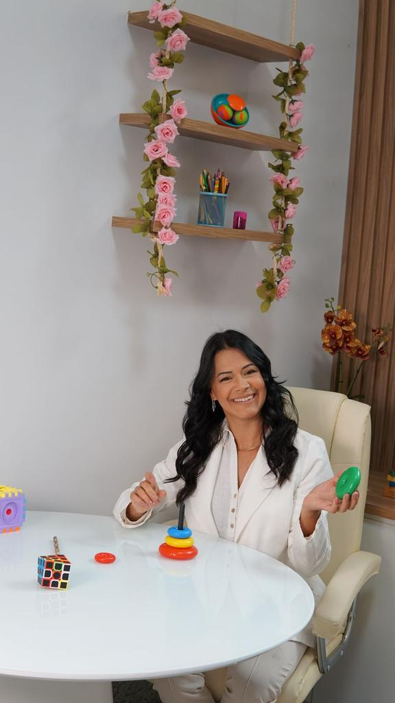

A supervisão pedagógica é um processo que envolve avaliação, observação e apoio a professores e ao ensino. O objetivo é melhorar a qualidade da educação, promovendo o desenvolvimento profissional docente e a aprendizagem dos alunos.
O neuropsicopedagogo atua na interseção entre neurologia, psicologia e pedagogia, focando em compreender como o cérebro aprende. A Roberta Martins realiza avaliações detalhadas para identificar dificuldades cognitivas, emocionais e comportamentais, garantindo um diagnóstico preciso.
Com base nisso, ela desenvolve intervenções pedagógicas personalizadas e um plano de apoio que integra família e escola, oferecendo estratégias práticas para o dia a dia. Esse acompanhamento contínuo permite ajustar métodos e recursos, promovendo o desenvolvimento acadêmico, social e emocional dos alunos.
Ao trabalhar em parceria com professores e familiares, Roberta fortalece a confiança da criança e cria um ambiente de aprendizagem inclusivo, potencializando o máximo do potencial de cada estudante.

Eu sou Roberta Martins, apaixonada por entender como o cérebro aprende. Quando criança, convivi com o TDAH não diagnosticado e fui rotulada como “sem limites”. Essa experiência me fez querer ajudar cada família a lidar com seus desafios emocionais e de aprendizagem.
Sou graduada em Pedagogia e me especializei em Neuropsicopedagogia. Atuo em parceria com a Clínica Valóri e o Instituto Fleury, realizando avaliações detalhadas que mapeiam dificuldades cognitivas, emocionais e comportamentais.
Com esses dados em mãos, desenvolvo intervenções personalizadas que envolvem família e escola, criando estratégias práticas para o dia a dia de cada criança. Meu objetivo é fortalecer a autoestima, a confiança e o protagonismo no aprendizado.
Agende sua avaliação gratuitaO neuropsicopedagogo mapeia e compreende as dificuldades de aprendizagem, aliando neurologia, psicologia e pedagogia para oferecer suporte completo a cada criança.
Coleta dados e realiza testes para identificar dificuldades de aprendizagem.
Cria um plano personalizado e define objetivos claros para o aluno.
Orienta os pais sobre avaliações e oferece estratégias para o dia a dia.
Colabora com professores para implementar adaptações e monitorar o progresso.
Tem dúvidas ou quer agendar sua avaliação?
Preencha o formulário ou fale conosco diretamente!